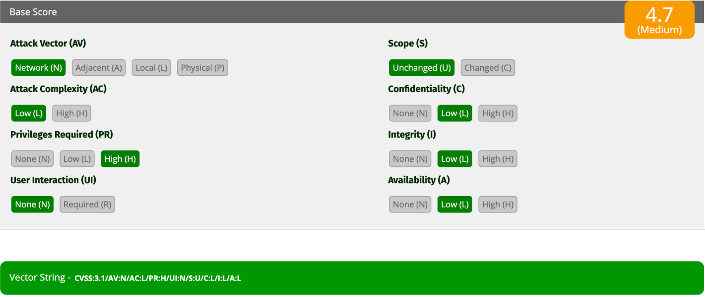

Actividad 17
Análisis métrico y cálculo de severidad de vulnerabilidades a través del framework estándar CVSS v3.1.
Dentro de las auditorías de seguridad perimetral, la catalogación precisa del impacto de una debilidad de software es vital para estructurar un ciclo de remediación eficiente. El estándar internacional Common Vulnerability Scoring System (CVSS v3.1) ofrece una escala numérica medible que traduce las propiedades de un fallo técnico en un level explícito de urgencia operativa. A través de este desglose analítico, evaluamos las condiciones operativas de un fallo identificado en los servicios de nuestra red interna, justificando matemáticamente la interacción de las métricas base. El análisis subsiguiente redefine la severidad del vector para evitar falsos positivos institucionales y trazar estrategias de remediación acordes al entorno corporativo real de la UPSLP.
Durante las evaluaciones de código y escaneo perimetral interno, se detectó un vector de ataque persistente cuyas propiedades técnicas estructurales se resumen a continuación:
- Origen de Explotación: Remota mediante protocolos de capa de red abierta (Network).
- Complejidad del Vector: Mínima cantidad de restricciones para lograr el compromiso técnico (Low).
- Nivel de Autenticación: Requiere credenciales vigentes con el rol de administración superior (High).
- Interacción con Terceros: El exploit se ejecuta de manera automatizada y silenciosa (None).
- Aislamiento del Entorno: El impacto queda confinado estrictamente al servicio web vulnerado (Scope Unchanged).
- Degradación CIA: Pérdida parcial controlada en los tres pilares principales (Confidencialidad: Bajo | Integridad: Bajo | Disponibilidad: Bajo).
Attack Vector: Network (N). La vulnerabilidad se puede explotar de manera completamente remota a través de internet o la red corporativa. No se requiere acceso físico local ni proximidad al segmento de red del servidor afectado.
El peligro implícito en este fallo radica en su disponibilidad remota y automatizada. No obstante, al condicionar su éxito a la obtención de credenciales de nivel **Administrador (PR:H)**, el perfil del atacante cambia de un script kiddie genérico a un adversario interno insatisfecho o una amenaza externa avanzada que ha completado fases previas de intrusión y escalada de privilegios.
Por consiguiente, este vector no debe evaluarse de forma aislada, sino como parte de un escenario compuesto donde el robo de identidad o ataques de phishing avanzados sirvan como el paso inicial para concretar el desfalco técnico.
- Lectura no autorizada acotada a tablas informativas que no exponen llaves criptográficas.
- Modificación parcial de datos estáticos que no interfieren con la lógica del servidor.
- Degradación menor de recursos de hardware sin provocar una denegación del servicio completa (DoS).
HARDENING_RULES // SECTION_17 CONTROL: REGULAR_PATCHING
Justificación del Plan de Mitigación: Un score de **4.7** indica que el riesgo se encuentra bajo control operacional pero expuesto a explotación dirigida. Al no existir una alteración del alcance general (**S:U**), el daño técnico colateral se encapsula. El plan de blindaje diseñado por el equipo técnico de la UPSLP prioriza las siguientes tres directivas de contingencia:
Evita el uso de credenciales de administrador comprometidas mediante tokens dinámicos.
Fragmentación de roles de súper-usuario para limitar el alcance de cuentas comprometidas.
Monitoreo en tiempo real de llamadas remotas inusuales hacia el componente web.

| Métrica de Base | Estado Técnico | Abreviación | Análisis Argumentativo del Componente |
|---|---|---|---|
| Vector de Ataque (AV) | Network / Red | AV:N | Explotable desde internet o segmentos lógicos ajenos sin requerir acceso local o físico. |
| Complejidad de Ataque (AC) | Low / Baja | AC:L | No depende de configuraciones específicas del sistema operativo o protecciones de memoria. |
| Privilegios Requeridos (PR) | High / Altos | PR:H | Frena el impacto general debido a que el atacante ya debe poseer permisos de administración global. |
| Interacción del Usuario (UI) | None / Ninguna | UI:N | El ataque avanza de forma completamente autónoma sin depender del engaño a un operador legítimo. |
| Alcance (Scope) | Unchanged / Sin Cambios | S:U | El impacto destructivo de la vulnerabilidad no puede migrar a capas lógicas o subredes paralelas. |
| Confidencialidad (C) | Low / Bajo | C:L | Acceso no autorizado restringido a información secundaria que no expone datos sensibles del usuario. |
| Integridad (I) | Low / Bajo | I:L | Modificaciones cosméticas o estructurales superficiales que no corrompen las bases relacionales centrales. |
| Disponibilidad (A) | Low / Bajo | A:L | Degradación parcial en el tiempo de respuesta del servidor web sin provocar una parálisis operativa completa. |